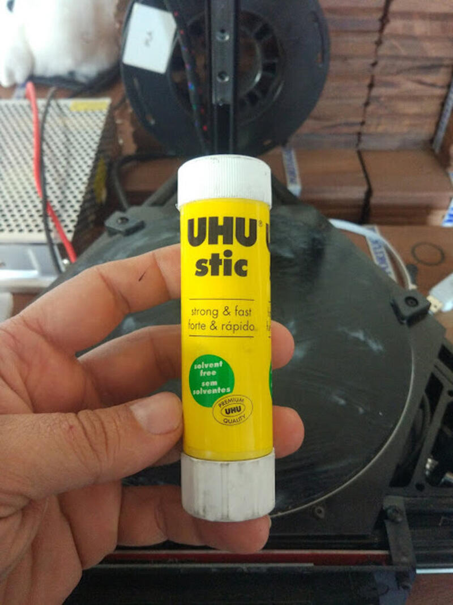
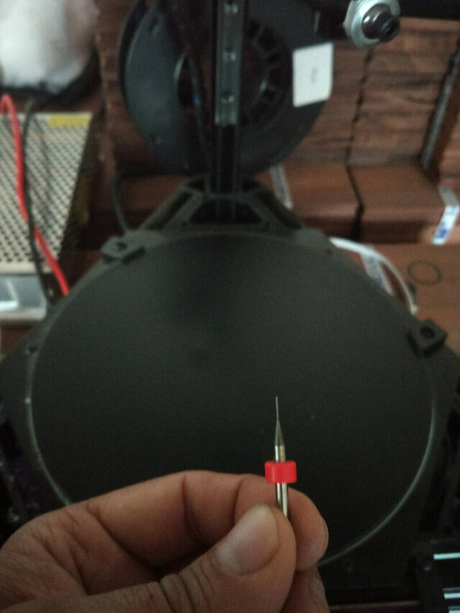
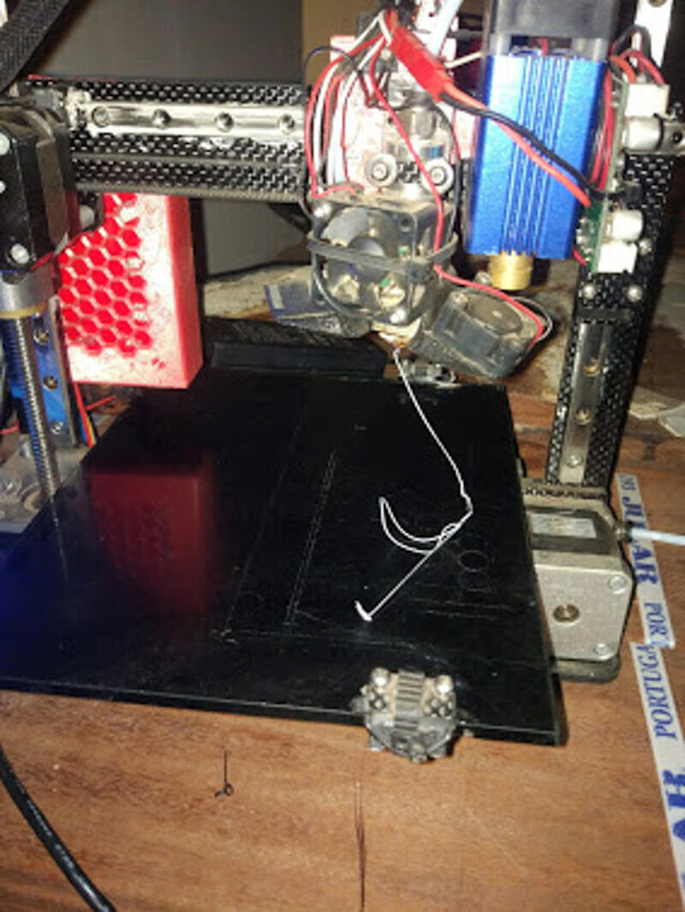
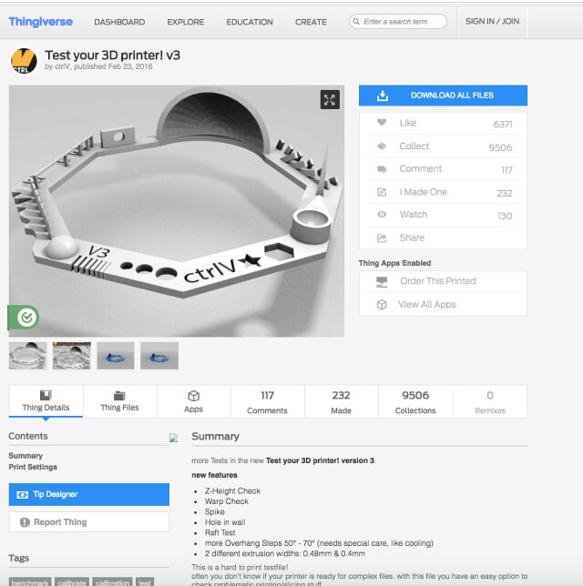
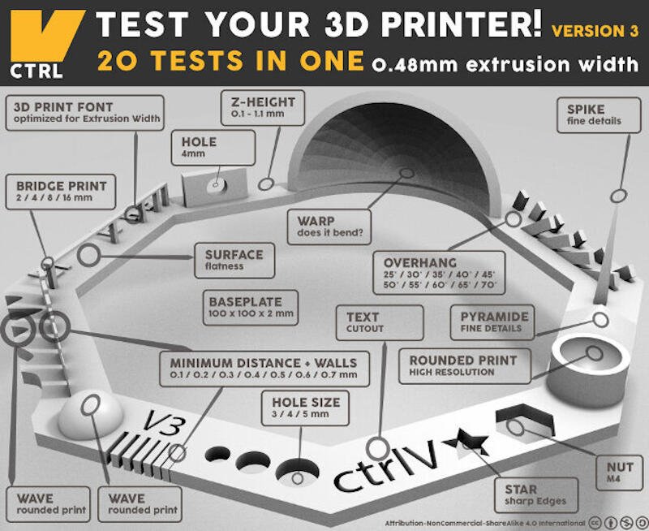
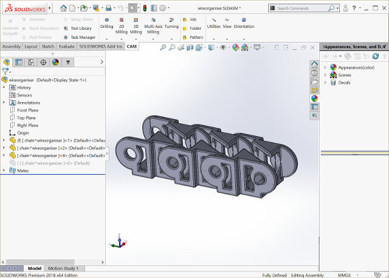
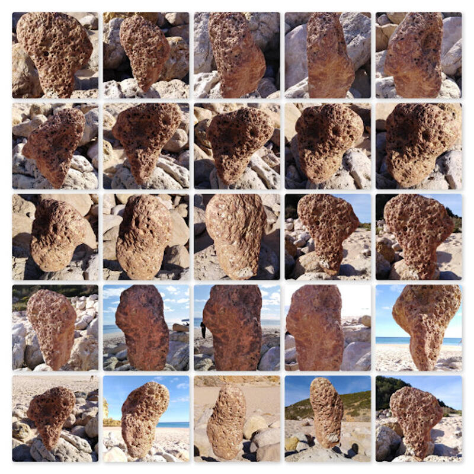
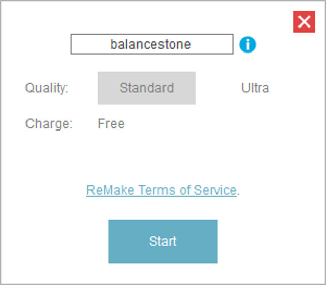
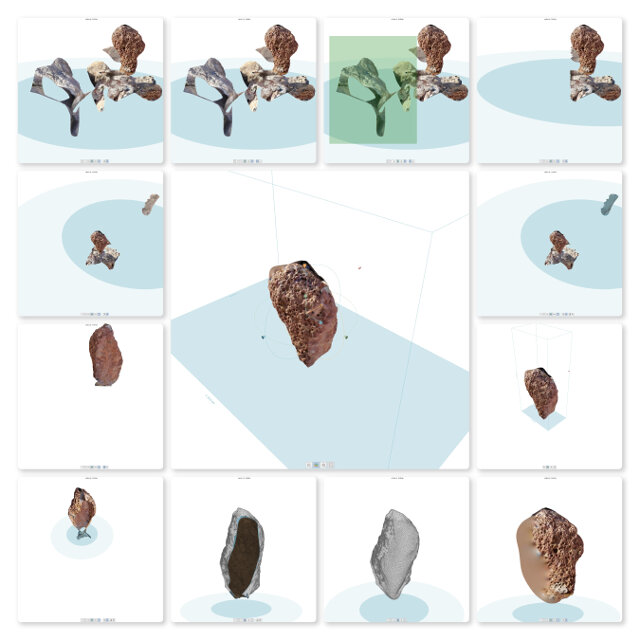

Week 05
3D Scanning and Printing
Individual assignment
- Test the design rules for your printer(s) (group project)
- Design and 3D print an object (small, few cm) that could not be made subtractively
- 3D scan an object (and optionally print it)
Learning outcomes:
- Identify the advantages and limitations of 3D printing and scanning technology
- Apply design methods and production processes to show your understanding.
Have you:
- Described what you learned by testing the 3D printers
- Shown how you designed and made your object and explained why it could not be made subtractively
- Scanned an object
- Outlined problems and how you fixed them
- Included your design files and ‘hero shot’ photos of the scan and the final object
Week workflow
Weekly assignment → Test Printer → design as object → Print object → Scan object → print scanned object (optional)
Tools used
- Delta 3D Printer
- Mini 3D Printer
- Caliper
- 0.4 mm needle
- Uhu glue
Software Used
- Repetier Host
- Solid Works
- Autodesk Recap
Files Generated/used
- Test's stl file: 3D Printer test model from thingiverse
- Gcode file: all week's generated Gcode from STL files
- Solid Works file: Project page of the 3D model for a wire organiser used on a CNC I built
- Chain's stl file: Generated stl file from the solidworks archive
- Printers preparation
- In order to start the test I prepared the printers by cleaning the nozzles and spreading new glue into the platforms
- I tested the extrusion on both printers and it looks good ;
- The limits of our printers
-
I started this week's assignment by looking for a test pattern on the website
Thingiverse
. Simply by using its search engine with the keywords,
"test 3d print"
it show various results with the purpose of testing the printers.

- Then I selected one of the designs. It tests different capabilities of the printers.
- Nut, Size M4 Nut should fit perfectly
- Wave, rounded print
- Star, Sharp Edges
- Name, Complex Shapes
- Holes, Size 3, 4, 5 mm
- minimal Distance: 0.1, 0.2, 0.3, 0.4, 0.5, 0.6, 0.7 mm
- Z height: 0.1, 0.2, 0.3, 0.4, 0.5, 0.6, 0.7, 0.8, 0.9, 1.0, 1.1 mm
- Wall Thickness: 0.1, 0.2, 0.3, 0.4, 0.5, 0.6, 0.7 mm
- Bridge Print: 2, 4, 8, 16 mm
- Sphere, Rounded Print 4.8mm height
- Sphere Mix, 7 mm height
- Pyramid 7 mm height
- Overhang: 25, 30, 35, 40, 45, 50, 55, 60, 65, 70°
- Warp, does it bend?
- 3D Print Font, optimized for 3D printing
- Surface, Flatness
- Size, 100 x 100mm x 23.83 (10mm width)
- Spike, minimum Layer Time, 21 mm height from Bottom (include Baseplate)
- Hole in Wall, 4 mm diameter, check for proper print
- Raft Test, raft should be just under the model
- Retract Travel, check retract settings for longer travel
- On the software Repetier Host I loaded the stl file and sliced for each printer. Naming the Gcode with the printer designation in front.
- Next I took the Gcode I had save on the SD card and placed on the 3D printers and started the print.
-
The prints were not bad but there was a lot of oozing (spider web). So I increased the retraction by .5 mm and then by 1 mm the improvements were very noticeable in both printers.

- The results
- Designing and printing an object
- I decided to create a necessary part of my final project. It's a wire organiser that when connected together works as a chain.
- The design is parametric so I can easily change the size as needed
- As I finished the Solid Works model I then export the file as stl
- 3D Scanning
- For that part of the assignment I used Autodesk Remake. It relies on Photogrammetry.
- luckily I was at the beach and I saw a model that would be interesting. Someone had but a large rock equilibrated.
- Next step was to take around 40 photos from all angles and in preference without moving background like people or clouds.
- Next I uploaded the files to Remake. Its important to select only good images and restrict background moving objects. After upload is done press create model. It can take a while during your model generation.
- After upload chose option on the generation process. I chose standard as its free.
- On the lower part of the screen ReMake shows models being generated and on queue. The top part shows models al ready done.
- With the model ready you can click on it and entering the edit mode of ReMake.
- I compile the editing sequence on the following mosaic, in synthesis. I selected the undesired parts deleted it and filled the holes left. finally I generated a stl file that should be ready to print.
 



While on the 3D printer test model's page I downloaded the design and took note of all the parameters it intends to test such as:
Bellow is the 3D print test model:
The author also supplies an image for reference when checking the print



| Parameter | Results | ||
|---|---|---|---|
| Mini | Delta | ||
| 1 | Nut, Size M4 Nut should fit perfectly | Yes | No |
| 2 | Wave, rounded print | Yes | Yes |
| 3 | Star, Sharp Edges | Yes | Yes |
| 4 | Name, Complex Shapes | Yes | Yes |
| 5 | Holes, Size 3, 4, 5 mm | 2.9, 3.9, 4.9 | 3, 4, 5 mm oval |
| 6 | minimal Distance: 0.1, 0.2, 0.3, 0.4, 0.5, 0.6, 0.7 mm | 0.1mm not good | 0.1, 0.2, 0.3 not good scale wrong 6.5mm instead of 7mm |
| 7 | Z height: 0.1, 0.2, 0.3, 0.4, 0.5, 0.6, 0.7, 0.8, 0.9, 1.0, 1.1 mm | 0.1mm printed with 0.2 and 1.1 with 1 | Yes |
| 8 | Wall Thickness: 0.1, 0.2, 0.3, 0.4, 0.5, 0.6, 0.7 mm | did't print 0.1, 0.2 next walls printed as 0.5 until last as 1mm | Yes |
| 9 | Bridge Print: 2, 4, 8, 16 mm | Printed as 2.85, 3.9, 7.9, 15.8 | Yes |
| 10 | Sphere, Rounded Print 4.8mm height | 5.1 | Yes |
| 11 | Sphere Mix, 7 mm height | 7.15 | Yes |
| 12 | Pyramide, 7 mm height | 6.95 | Yes |
| 13 | Overhang: 25, 30, 35, 40, 45, 50, 55, 60, 65, 70° | Yes | Yes |
| 14 | Warp, does it bend? | no | Yes |
| 15 | 3D Print Font, optimized for 3D printing | Yes | Yes |
| 16 | Surface, Flatness | a bit rough | Yes |
| 17 | Size, 100 x 100mm x 23.83 (10mm width) | 99.45 x 99.8 x 23.2 (10.2 with) | Yes |
| 18 | Spike, minimum Layer Time, 21 mm height from Bottom (include Baseplate) | 15mm | Yes |
| 19 | Hole in Wall, 4 mm diameter, check for proper print | Yes | Yes |
| 20 | Raft Test, raft should be just under the model | didn't test | Yes |
| 21 | Retract Travel, check retract settings for longer travel | almost no ozzing | Yes |
| Conclusion | For a FDM printer I belive the result is very good. The sizes differences are probably due to a PLA shirincage |









The result!